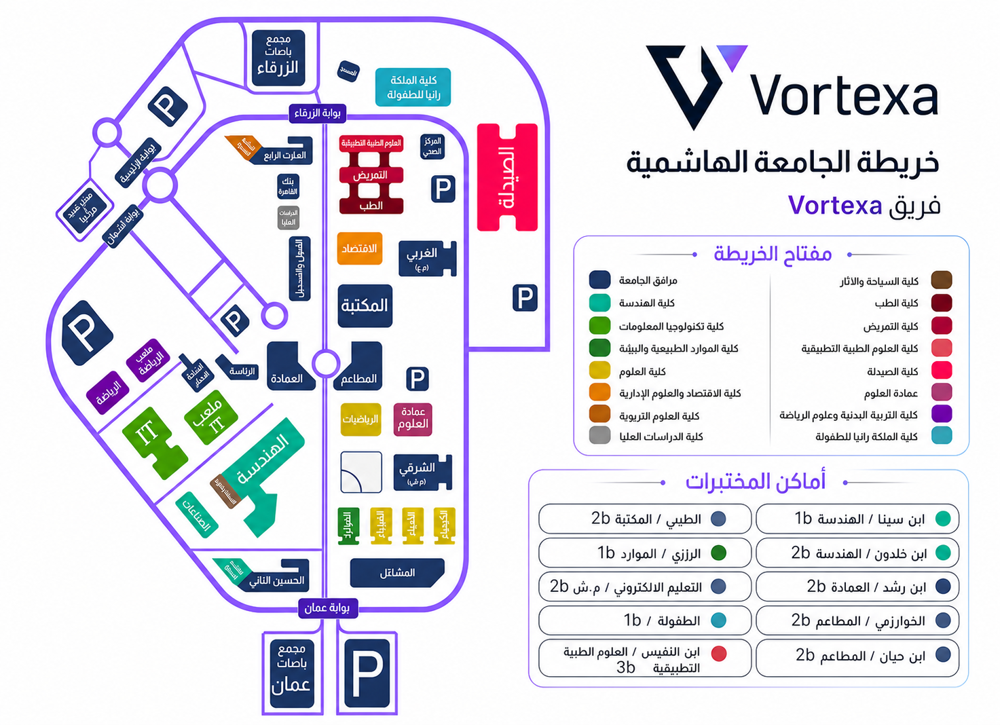

→ العودة للرئيسيةكل مبنى ومسار.
خريطة الجامعة التفاعلية
كل مبنى ومسار.
ووصول أسهل لوجهتك.
خريطة الحرم الفعلية بمبانيها ومساراتها وإحداثياتها، مع انتقال بين أي موقعين.
كلياتطبيإداريخدمات
خريطة الحرم الفعلية بمبانيها ومساراتها وإحداثياتها، مع انتقال بين أي موقعين.
